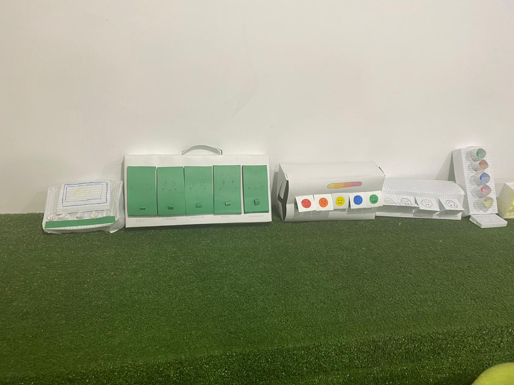

Semana 9
Clase presencial:
El objetivo principal fue crear prototipos físicos de proyectos usando cartulinas, tijeras y pegamento. Nos enfocamos en construir un "semáforo de emociones" en papel o cartón, con cada aspecto del diseño justificado por fuentes verificadas. Investigué con mi equipo para respaldar nuestro diseño, presentando luego individualmente. El profesor elogió nuestro trabajo, reconociendo su potencial como herramienta didáctica para niños de primaria.
Clase virtual:
Aprendimos a utilizar Tinkercad. El profesor guió la clase a través del software, enseñándonos a crear diseños 3D. Exploramos las funciones, el espacio de trabajo, y utilizamos formas geométricas tridimensionales y nodos.